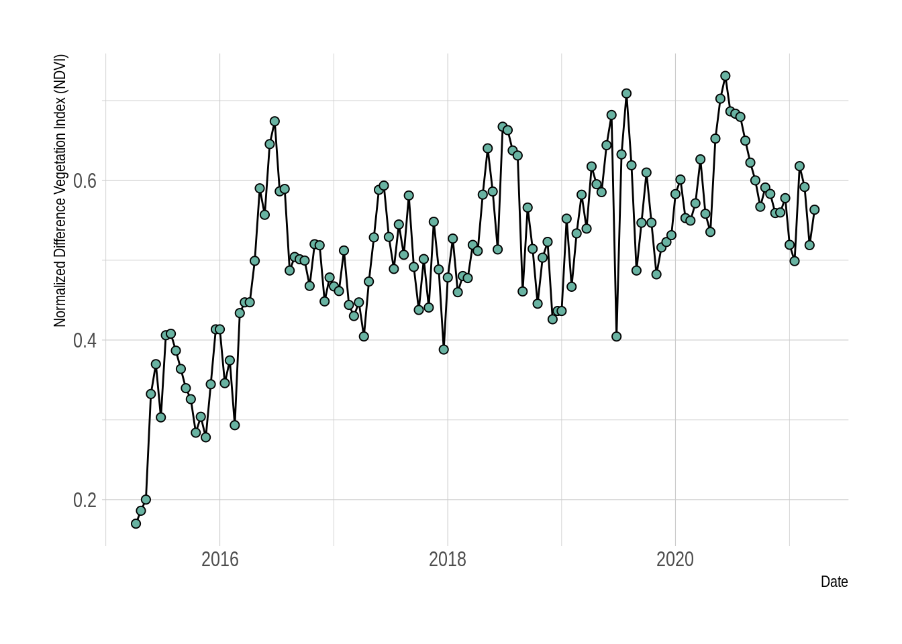

6 Practical: Pair coding with GitHub
Just a quick acknowledgement that I have adapted much of the framework for the following from Michael Dietze’s Pair coding practical that is a living online supplement to his book (Dietze 2017). Thanks for sharing the code under an MIT license Mike! The main differences are that I’ve changes the subject matter from looking at phenology in Tall Grass Prairie using PhenoCam data to looking at postfire vegetation growth in Fynbos using MODIS satellite Normalized Difference Vegetation Index (NDVI), a measure of vegetation “greenness.” This includes changing the core model we fit too.
6.1 Objectives
The primary goal of this exercise is to gain experience working collaboratively to develop a scientific workflow. As such, this assignment must be completed with a partner. Specifically, we will outline an analysis, break the overall job into parts, and have each person complete part of the project. To put these parts together we will be using GitHub.
Along the way we will also be exploring the statistical concept of Likelihood by fitting the same model and estimating the parameters with two very different approaches - Least Squares and Maximum Likelihood.
6.2 Postfire regeneration
The goal of our analysis is to investigate the regeneration of Fynbos vegetation after fire by exploring a time-series of 16-day composite Normalized Difference Vegetation Index (NDVI) from the MODIS satellite mission, a measure of vegetation “greenness.” You can read up on the data product here. We’ll be using data for one location (250m by 250m pixel) from the Silvermine section of Table Mountain National Park. You can view the raw data in comma-separated value (.csv) format here.
The workflow for this analysis with have three components:
- Download MODIS NDVI data
- Visualize the data
- Fit two competing negative exponential model using non-linear least squares (NLS)
- Fit the same models using Maximum Likelihood Estimation (MLE) and compare them using a likelihood ratio test
From this overall design, let’s next outline the specific steps involved as pseudocode
### Fynbos Postfire Workflow
## Download NDVI data for one postfire recovery cycle
## Visualize data
## Fit two variants of the negative exponential model with NLS
## Visualize models and data
## Fit two variants of the negative exponential model with MLE
## Visualize models and data
## Compare model variants using a Likelihood Ratio Test6.3 Modular Design
From this overall design we can look for ways to modularize the analysis. One feature that jumps out is that we need to visualize the data three times, so we should definitely make a function to do that. The inputs to the function would be an x-axis (age) and a y-axis (NDVI), which we might pass to the function as a dataframe for convenience. Since this is a graphing function we’d also like the ability to set all sorts of plot characteristics, which can be done in R by passing ... as an argument and then passing that on to the internal plot call. The proposed function interface would thus be
##' Plot NDVI data
##'
##' @param dat dataframe that contains columns "age" and "NDVI"
##' @param fit a fitted model to overlay on the data if present
##' @param ... additional graphing parameters
##'
plot.NDVI <- function(dat, fit = NA, ...)Next, because the raw data will be downloaded off the web and we need to convert the dates from “character” to “Date” class and convert the dates let’s go ahead and create a download function. This function just needs to know the URL for where to find the data. Unlike the plot function, this function will return something (the data that was downloaded), so it would be good design to document what is returned and how it will be formatted
##' Download NDVI data
##'
##' @param URL web address where data is located
##' @return data.frame with 16-day windows as rows, variables as columns
download.NDVI <- function(URL)Next we’ll fit two variants of a negative exponential model to the postfire NDVI trajectory data, and we’re going to do this twice - once using non-linear least squares (NLS), and again using Maximum Likelihood Estimation (MLE). Fortunately, there is already an efficient base R function for fitting the NLS model nls(), so we’ll only need to define functions for the MLE fits.
The input to such a fit would obviously be the same data.frame that we’re using to make the plot. We’ll also need to input a vector of initial guesses at the model parameters to help the numerical optimization converge, and we’ll want to return the full output from that numerical optimization so that we can check if it converged successfully. Finally, optimizing MLE requires a) defining the model and b) defining a function to optimize the parameters by minimizing the negative log of the likelihood. Because all that’s returned from the MLE optimization is the list if parameters of the model (and not the model itself), if we want to make a plot of models afterward, we need a separate function that can take the parameters and perform the model calculation to predict the shape of the curve. Since we need the same function to do the optimization and the plotting, it’s more efficient to define it as a separate function.
First we’ll do the functions for the simpler variant of the model:
##' Function (a) to define the model for the simple negative exponential model using MLE:
##' @param theta vector of model parameters in order: alpha, gamma, lambda
##' @param x vector of x values
##' @return vector of model predictions
pred.negexp <- function(theta, x)
##' Function (b) to fit the simple negative exponential model and minimize the -ln.likelihood
##' @param dat dataframe of NDVI, age
##' @param par vector of initial parameter guesstimates (on order of theta)
##' @return output from numerical optimization
fit.negexp.MLE <- function(dat,par)Then we’ll do the functions for the full model:
##' Function (a) to define the full model using MLE:
##' @param theta vector of model parameters in order: alpha, gamma, lambda, A, phi (NOTE THE TWO EXTRA PARAMETERS!)
##' @param x vector of x values
##' @return vector of model predictions
pred.negexpS <- function(theta, x)
##' Function (b) to fit the full model and minimize the -ln.likelihood
##' @param dat dataframe of NDVI, age
##' @param par vector of initial parameter guesstimates (on order of theta)
##' @return output from numerical optimization
fit.negexpS.MLE <- function(dat,par)At this point we’ve spent a good bit of time up front on organization – we have a detailed plan of attack and have thought carefully about what each module is responsible for doing. Each task has well-defined inputs, outputs, and goals. Rather than facing a thankless job of documenting our code after we’re done, even though we haven’t written a single line of code yet we are largely done with our documentation. What remains to do is implementation.
6.4 Task 1: Create & Clone Repository
Because we’re going to employ version control in our project, our first step is to create the repository that our project will be stored in. To ensure that both you and your partner get to see every step of how to work with version control, for the rest of this exercise you are going to complete every step twice, once from the perspective of the OWNER of the repository and once as the COLLABORATOR.
6.4.1 OWNER
- Go to your account on github.com and under the Repositories tab click on the “New” button (green with a picture of a book on it)
- Choose a name for your repository, but make sure it’s different from your partner’s (Don’t choose a “Repository template,” and keep it a “Public” repository)
- Click the “Initialize this repository with a README” checkbox
- Optionally also provide a Description, Add a licence (e.g. MIT), and add R to the .gitignore (check “.gitignore” and search for the R template)
- Click “Create Repository”
- Copy the URL of your new repository by clicking the clipboard icon
- To clone the repository, open up RStudio and create a New Project using this URL. Note: If you already have a project open it will close when you do so. Don’t worry, you can return to that project after the prac using the drop-down in the top-right of the RStudio window.
- Select New Project from the menu in the top right corner
- Select Version Control then Git
- Paste the URL in and click Create Project
6.5 Task 2: Add the first function: download.NDVI
Within this project we’ll create separate files for each part of the analysis. To make the order of the workflow clear we’ll want to name the files systematically. In the first file we’ll implement the download.NDVI() function.
NOTE: You’ll see that I’ve provided the R code for how I actually accessed the data using library(“MODISTools”), but have left that commented out. The function can take quite a long time so I thought best that we just read the output of that call from a file I’ve saved to the GitHub repository.
##' Download MODIS NDVI data
##' @param URL web address where data is located
##'
## 1) How I really did it. For the prac we'll use option 2 because it's faster
## library("MODISTools") #Call R library MODISTools that allows us to download MODIS satellite data directly into R
##
## ndvi <- mt_subset(product = "MOD13Q1",
## lat = -34.100875,
## lon = 18.449375,
## band = "250m_16_days_NDVI",
## start = "2000-01-01",
## end = "2021-10-01",
## progress = FALSE)
##
## 2) How we'll do it for the prac: Read the data from a .csv file in my github repository for the course notes
##
download.NDVI <- function(URL) {
# Wrap function in an if/else loop that checks if the URL is valid
if (length(URL) == 1 & is.character(URL) & substr(URL,1,4)=="http") {
# Read in data
modat <- read.csv(URL)
# Convert Digital Numbers (more efficient for data storage) to NDVI
modat$NDVI <- modat$value*0.0001
# Convert calendar_date to class "Date"
modat$calendar_date <- as.Date(as.character(modat$calendar_date))
# Return the data
return(modat)
} else {
# If the URL is not valid return...
print(paste("download.NDVI: Input URL not provided correctly",URL))
}
}6.5.1 OWNER
- In RStudio, click File > New File > R Script
- Copy and Paste the above function into this file
- Select the code you have pasted in go to the menu
Code>Comment/Uncomment linesor alternatively use the quick keystrokeCtrl+Shift+cat once to remove the comments# - Save the file as “01_download.NDVI.R”
- From the Git tab, click the box next to the file you just created. This is equivalent to git add if you were doing this command line in bash or terminal
- Click Commit, enter a log message, and click Commit. This is equivalent to git commit in command line
- To push the change up to Github click on the green up arrow. This is equivalent to git push
6.6 Task 3: Collaborator adds plot.NDVI
With the first function complete, let’s now imagine that a COLLABORATOR has been tasked with adding the second function. To do so they must first fork and clone the repository
6.6.1 COLLABORATOR
- Go to Github and navigate to the project repository within the OWNER’s workspace.
- Click “Fork,” which will make a copy of the repository to your own workspace.
- Copy the URL to your own version and follow the instructions above for cloning the repository in RStudio.
- Open a new file, enter the code below, and then save the file as “02_plot.NDVI.R”
##' Plot NDVI data
##'
##' @param dat dataframe that contains columns "age" and "NDVI"
##' @param fit a fitted model to overlay on the data if present
##' @param ... additional graphing parameters
##'
plot.NDVI <- function(dat, fit = NA, ...){
if(!is.null(dat)){ # Begin if/else statement
# Base plot of the data points
plot(dat$age, dat$NDVI, ylab = "NDVI", xlab = "Postfire age (Years)")
if(!is.na(fit[1])){ #Begin inner if statement
# Overlay the fitted model on the plot
lines(dat$age, predict(fit, list(x = dat$age)), col = 'skyblue', lwd = 3)
} # End inner if statement
} else {
print("plot.NDVI: input data not provided or invalid")
} # End if/else statement
}- Follow the instructions above to Add, Commit, and Push the file back to your Github
- Next you want to perform a “pull request,” which will send a request to the OWNER that they pull your new code into their mainline version. From your Github page for this project, click New Pull Request.
- Follow the instructions, creating a title, message, and confirming that you want to create the pull request
6.6.2 OWNER
- Once the COLLABORATOR has created the pull request, you should get an automatic email and also be able to see the pull request under the “Pull Requests” tab on the Github page for the project.
- Read the description of the proposed changes and then click on “Files Changed” to view the changes to the project. New code should be in green, while deleted code will be in pink.
- The purpose of a pull request is to allow the OWNER to evaluate the code being added before it is added. As you read through the code, if you hover your mouse over any line of code you can insert an inline comment in the code. The COLLABORATOR would then have the ability to respond to any comments. In larger projects, all participants can discuss the code and decide whether it should be accepted or not. Furthermore, if the COLLABORATOR does any further pushes to Github before the pull request is accepted these changes will automatically become part of the pull request. While this is a very handy feature, it can also easily backfire if the COLLABORATOR starts working on something different in the meantime. This is the reason that experienced users of version control will use BRANCHES to keep different parts separate.
- Click on the “Conversation” page to return where you started. All participants can also leave more general comments on this page.
- If you are happy with the code, click “Merge Pull Request.” Alternatively, to outright reject a pull request you could click “Close pull request” (but please don’t do this in the prac unless your partner has made an error)
6.7 Task 4: Owner adds functions for model fitting using MLE
We are now past the ‘set up’ stage for both the OWNER and the COLLABORATOR, so for this task we’ll explore the normal sequence of steps that the OWNER will use for day-to-day work
6.7.1 OWNER
- Pull the latest code from Github. In RStudio this is done by clicking the light blue down arrow on the Git tab. This is equivalent to the command line git pull origin master where origin refers to where you did your original clone from and master refers to your main branch (if you use branches you can pull other branches)
- Next, open up a new R file, add the code below, and save as “03_negexp.R”
##' Functions to fit negative exponential model using MLE
##'
##' 1) Fit SIMPLE negative exponential model using maximum likelihood estimation
##'
##' Function (a) to define the model for the SIMPLE negative exponential model using MLE:
##' @param theta parameter vector in order: alpha, gamma, lambda
##' @param x vector of x values
##' @return vector of model predictions
pred.negexp <- function(theta, x){
NDVI = theta[1] + theta[2] * (1 - exp(- x/theta[3]))
}
##' Function (b) to fit the SIMPLE negative exponential model and minimize the -ln.likelihood
##' @param dat dataframe of NDVI, age
##' @param par vector of initial parameter guesstimates (on order of theta)
##' @return output from numerical optimization
fit.negexp.MLE <- function(dat,par){
## define log likelihood
lnL.negexp <- function(theta,dat){
-sum(dnorm(dat$NDVI, pred.negexp(theta, dat$age), 0.001, log=TRUE), na.rm=TRUE) #Note that I added a standard deviation of 0.001 (in reality we should get that from the MODIS data)
}
## fit by numerical optimization
optim(par, fn = lnL.negexp, dat=dat, control = list(maxit = 1000))
}
##########################################
##' 2) Fit negative exponential plus mystery term using maximun likelihood estimation
##' Function (a) to define the FULL model using MLE:
##' @param theta parameter vector in order: alpha, gamma, lambda, A, phi
##' @param x vector of x values
##' @return vector of model predictions
pred.negexpS <- function(theta, x){
NDVI = theta[1] + theta[2] * (1 - exp(- x/theta[3])) +
theta[4] * sin(2*pi*x + (theta[5] + pi/6*(3 - 1)))
}
##' Function (b) to fit the full model and minimize the -ln.likelihood
##'
##' @param dat dataframe of NDVI, age
##' @param par vector of initial parameter guesstimates (on order of theta)
##' @return output from numerical optimization
fit.negexpS.MLE <- function(dat,par){
## define log likelihood
lnL.negexpS <- function(theta,dat){
-sum(dnorm(dat$NDVI, pred.negexpS(theta, dat$age), 0.001, log=TRUE), na.rm=TRUE) #Note that I added a standard deviation of 0.001 (in reality we should get that from the MODIS data)
}
## fit by numerical optimization
optim(par, fn = lnL.negexpS, dat=dat, control = list(maxit = 1000))
}- As before, add your new file under the Git tab, Commit the change, and push it back to Github
To estimate the parameters in the model we’re using the likelihood principle which states that “a parameter value is more likely than another if it is the one for which the data are more probable.” To do this we need to define a Likelihood, which is the relationship between the value of the parameter and the probability of some observed data. [For the record, the Likelihood is not a probability distribution because it does not integrate to 1]. In this case we’re assuming a Normal likelihood (hence the use of dnorm() in the function) and use a standard deviation (0.001) that I’ve made up to represent the uncertainty (ideally this should come from the data; e.g. the radiative transfer modelling that was used to estimate the “surface reflectance” MODIS product from the “top of atmosphere reflectance” that is actually observed by the satellite). In a more detailed analysis we’d want to follow up to check both these assumptions, but it’s a simple starting point for this practical demonstration.
Applying the likelihood principle we would then look for the most likely value of \(\theta\), the vector of parameters in the model (\(\alpha\), \(\gamma\) and \(\lambda\) in the simpler model, and adding \(A\) and \(\phi\) in the full model), which we call the Maximum Likelihood estimate. For a number or reasons that we won’t go into in this module, it is common to work with negative log likelihoods instead of likelihoods, in which case the negative implies that instead of looking for the maximum we’re now looking for the minimum (perhaps a bit difficult to get your head around, but it’s a small trade-off that makes for much easier mathematics). The fact that logarithm is a monotonic transformation means that taking the log does not change the location of this minimum.
The code for this comes in three parts.
First are the models themselves, pred.negexp() and pred.negexpS(), which translate the equations:
- For the “simple” model (pred.negexp()) it’s just a negative exponential:
\[\begin{gather} \text{NDVI}_{i,t}=\alpha_i+\gamma_i\Big(1-e^{-\frac{age_{i,t}}{\lambda_i}}\Big) \end{gather}\]
- For the “full” model (pred.negexpS()) we include a sine term:
\[\begin{gather} \text{NDVI}_{i,t}=\alpha_i+\gamma_i\Big(1-e^{-\frac{age_{i,t}}{\lambda_i}}\Big)+ A_i\text{sin}\Big(2\pi\times\text{age}_{i,t}+\Big[\phi+\frac{\pi}{6}(m_{i,t}-1)\Big]\Big) \end{gather}\]
Where:
- \(\alpha\) is the NDVI at time 0 (i.e. directly after the fire)
- \(\gamma\) is the maximum average increase in NDVI
- i.e. the maximum NDVI reached by the blue curve is \(\alpha + \gamma\)
- \(\lambda\) is the rate of increase in NDVI
- \(A\) is the amplitude of the sine term
- \(\phi\) adjusts the timing of the sine term to account for the month the fire occurred
Second is the negative log likelihood function, lnL.negexp(), which we’re trying to minimize. The core of this is the Normal probability density, dnorm(). The first argument is the data, the second the is model, and the third is the standard deviation. The fourth argument says that we want to return the log density, which is much more accurate if it’s performed internally than if we take the log of what’s returned by dnorm. Since we have many data points dnorm returns a vector, which we then sum up and change the sign to turn this into a minimization problem.
The third part is a call to a numerical optimization function, optim, that searches through parameter space to find the set of parameters that minimize the negative log likelihood (i.e. that Maximize the Likelihood). Arguments are the initial parameter guesstimates, the function being minimized, and any additional parameters that get passed on to that function.
6.8 Task 5: Collaborator adds the master script
The day-to-day workflow for the COLLABORATOR is similar, but not exactly the same as the OWNER. The biggest differences are that the COLLABORATOR needs to pull from the OWNER, not their own repository, and needs to do a pull request after the push.
6.8.1 COLLABORATOR
- Pull from OWNER. Unfortunately, this has to be done from the command line rather than the pull button within RStudio, which just pulls from the COLLABORATOR’s repository. In RStudio go to Tools > Shell to open a terminal
- At the terminal type
git pull URL masterwhere URL is the address of the OWNER’s Github repository. Because it is a pain to always remember and type in the OWNER’s URL, it is common to define this as upstream
git remote add upstream URLwhich is a one-time task, after which you can do the pull as
git pull upstream master- Open a new Rmd file and add the text and code chunks below. This code just flushes out the pseudocode outline we started with at the beginning of this activity.
6.9 Master script for postfire analysis
First we’ll source() (i.e. “run all code in”) the scripts with the functions we made. Then we’ll set the URL, read in the data with download.NDVI(), and plot it with plot.NDVI().
## Load required functions
# if(file.exists("01_download.NDVI.R")) source("01_download.NDVI.R")
# if(file.exists("02_plot.NDVI.R")) source("02_plot.NDVI.R")
# if(file.exists("03_negexp.R")) source("03_negexp.R")
## Download NDVI data
URL = "https://raw.githubusercontent.com/jslingsby/BIO3019S_Ecoforecasting/master/data/modisdata.csv"
dat <- download.NDVI(URL)
# Convert "calendar_date" to postfire age in days since fire - assuming the first date in the times eries is the time of the fire
dat$age <- (as.numeric(dat$calendar_date) - min(as.numeric(dat$calendar_date), na.rm = T))/365.25
## Plot overall NDVI time series
plot.NDVI(dat)
Now we’ll fit the simple and full negative exponential models using Non-linear Least Squares (NLS).
First the simpler model:
## Simple model
# set parameters
par <- c(alpha = 0.2, gamma = 0.4, lambda = 0.5)
# fit model
fit_negexp <- fit.negexp.nls(dat = dat, theta = par)
# plot
plot.NDVI(dat = dat, fit = fit_negexp)
And let’s look at the model summary with parameter estimates
# print model summary
summary(fit_negexp)##
## Formula: NDVI ~ alpha + gamma * (1 - exp(-age/lambda))
##
## Parameters:
## Estimate Std. Error t value Pr(>|t|)
## alpha 0.25107 0.02887 8.695 1.04e-14 ***
## gamma 0.32371 0.02723 11.887 < 2e-16 ***
## lambda 1.17687 0.21396 5.500 1.84e-07 ***
## ---
## Signif. codes: 0 '***' 0.001 '**' 0.01 '*' 0.05 '.' 0.1 ' ' 1
##
## Residual standard error: 0.07302 on 135 degrees of freedom
##
## Number of iterations to convergence: 12
## Achieved convergence tolerance: 3.924e-06Now the full model:
## Full model
# set parameters
par <- c(alpha = 0.2, gamma = 0.4, lambda = 0.5, A = 0.6, phi = 0)
# fit model
fit_negexpS <- fit.negexpS.nls(dat = dat, theta = par)
# plot
plot.NDVI(dat = dat, fit = fit_negexpS)
# print model summary
summary(fit_negexpS)##
## Formula: NDVI ~ alpha + gamma * (1 - exp(-age/lambda)) + A * sin(2 * pi *
## age + (phi + pi/6 * (3 - 1)))
##
## Parameters:
## Estimate Std. Error t value Pr(>|t|)
## alpha 0.207522 0.024948 8.318 9.31e-14 ***
## gamma 0.364746 0.023926 15.245 < 2e-16 ***
## lambda 0.989154 0.126064 7.846 1.25e-12 ***
## A 0.063136 0.007114 8.875 4.12e-15 ***
## phi -0.839167 0.111887 -7.500 8.10e-12 ***
## ---
## Signif. codes: 0 '***' 0.001 '**' 0.01 '*' 0.05 '.' 0.1 ' ' 1
##
## Residual standard error: 0.05835 on 133 degrees of freedom
##
## Number of iterations to convergence: 15
## Achieved convergence tolerance: 6.939e-06Lots more parameters, but how do the estimates for the common parameters compare?
How do we know which model is better?
A great way to compare models is using the Akaike information criterion (AIC), which is an estimator of prediction error (i.e. relative quality) of statistical models for a given set of data. The formula for the Akaike information criterion is:
\(AIC = 2K -2(ln(L))\)
Where:
- \(k\) = the number of estimated parameters in the model
- \(L\) = maximum value of the likelihood function for the model
When comparing models, the lower the AIC the better, and in general a difference in AIC of 3 or more is analagous to the models being significantly different at an \(\alpha\) of \(p < 0.05\).
AIC(fit_negexp, fit_negexpS)## df AIC
## fit_negexp 4 -325.7135
## fit_negexpS 6 -385.6718So it looks like the full model is much better than the simpler model…?
Q1: Why is it not okay to compare these models using AIC?
exp((AIC(fit_negexpS) - AIC(fit_negexp))/2)## [1] 9.555111e-14anova(fit_negexp, fit_negexpS)## Analysis of Variance Table
##
## Model 1: NDVI ~ alpha + gamma * (1 - exp(-age/lambda))
## Model 2: NDVI ~ alpha + gamma * (1 - exp(-age/lambda)) + A * sin(2 * pi * age + (phi + pi/6 * (3 - 1)))
## Res.Df Res.Sum Sq Df Sum Sq F value Pr(>F)
## 1 135 0.71976
## 2 133 0.45280 2 0.26696 39.207 4.12e-14 ***
## ---
## Signif. codes: 0 '***' 0.001 '**' 0.01 '*' 0.05 '.' 0.1 ' ' 1Now we’ll fit the simple and full negative exponential models using Maximum Likelihood Estimation (MLE).
First the simpler model:
## Fit the simpler model using MLE
# set parameters
par <- c(alpha = 0.2, gamma = 0.4, lambda = 0.5)
# fit model
fit_negexpMLE <- fit.negexp.MLE(dat, par)
# plot
plot.NDVI(dat)
# add curve with MLE parameters
lines(dat$age, pred.negexp(fit_negexpMLE$par,dat$age), col = 'skyblue', lwd = 3)
fit_negexpMLE## $par
## alpha gamma lambda
## 0.2510442 0.3237419 1.1767370
##
## $value
## [1] 359053.6
##
## $counts
## function gradient
## 118 NA
##
## $convergence
## [1] 0
##
## $message
## NULLThen the full model:
## Fit the full model using MLE
# set parameters
par <- c(alpha = 0.2, gamma = 0.4, lambda = 0.5, A = 0.6, phi = 0)
# fit model
fit_negexpMLES <- fit.negexpS.MLE(dat, par)
# plot
plot.NDVI(dat)
# add curve with MLE parameters
lines(dat$age, pred.negexpS(fit_negexpMLES$par,dat$age), col = 'skyblue', lwd = 3)
fit_negexpMLES## $par
## alpha gamma lambda A phi
## 0.20772317 0.36449293 0.98919689 0.06310554 -0.83741663
##
## $value
## [1] 225574.7
##
## $counts
## function gradient
## 914 NA
##
## $convergence
## [1] 0
##
## $message
## NULLDELETE: The Likelihood Ratio test statistic is chi-squared distributed, with degrees of freedom equal to the number of parameters that are constrained (in the current example, the number of parameters that differ between the models, i.e., 2). If you look it up on a chi-squared table, you’ll find that at 2 degrees of freedom the chi-squared statistic needs to be >10.597 to be significant at an \(\alpha\) of P<0.05.
When interpretting the relative difference in AIC between two models the model with the higher (worse) AIC is exp((AIC_lower - AIC_higher)/2) times as probable as the model with the lower (better) model to minimize the information loss. Let’s calculate this for our models:
AIC_simple = 6 + 2*fit_negexpMLE$value
AIC_simple## [1] 718113.1AIC_full = 6 + 2*fit_negexpMLES$value
AIC_full## [1] 451155.3exp((AIC_full - AIC_simple)/2)## [1] 0#LRstatistic = 2*(fit_negexpMLE$value - fit_negexpMLES$value)
#LRstatistici.e. the probability of the worse model being as good as the better model is so low that R is happy to call it zero!!!
- Save this file as “04_Master.Rmd.”
- Within RStudio’s Git tab, add the file and Commit. Use the Push (up arrow) button to push this to your own repository
- On Github.com, submit a pull request
6.9.1 OWNER
- Evaluate and accept pull request.
At this point your workflow should be complete and you should be able to run the analysis.